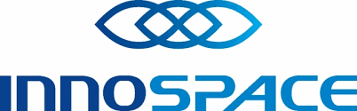
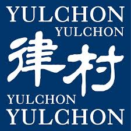
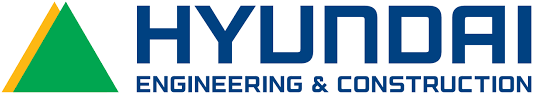
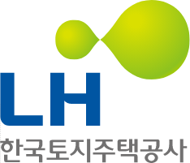
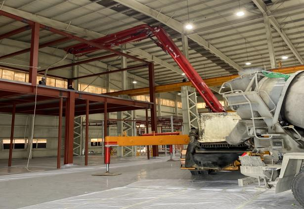
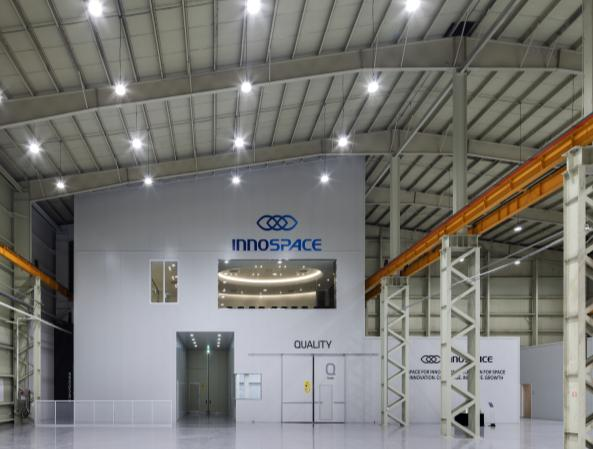

실무 경력
스타트업·법무법인·건설업·공기업에서 총무·자산·공간 운영 담당
전국 8개 사업장부터 1,100명이 근무하는 사무공간까지. 자산과 구매·계약을 관리하고, 구성원의 불편을 해결하며, 새로운 공간이 안정적으로 운영되도록 준비했습니다.

이노스페이스
법무법인 율촌
현대엔지니어링
한국토지주택공사서로 다른 규모와 환경에서 맡아 온 운영 업무
스타트업·법무법인·건설업·공기업에서 총무·자산·공간 운영 담당
이노스페이스 · 전용 약 4,200평, 근무 인원 약 260명
율촌 · 파르나스타워 12개 층, 약 6,160평·월평균 요청 60건
LH · 본부 사옥 1개소, 지역 오피스 7개소, 공공 부동산 20개소
업무 기준을 정리하고 비용과 처리기간을 개선한 결과
이노스페이스 · 8개 공종 분리발주 약 5,000만 원 + 전력설비 인수 약 2,100만 원
율촌 · P1~P4 기준과 유지보수 맵·시방서 정리, 평균 4일 → 2.5일
이노스페이스 · 시설유지보수·사업장 구축 절차·자산관리·물리보안 운영규정 4건을 제정해 사업장별 공통 기준 마련
LH · 1식 내역 세분화, 물량·단가·증빙 검증 및 부적정 청구 조정
업무가 복잡해질수록 문제의 원인을 먼저 확인하고, 여러 담당자와 실행 방법을 맞췄습니다.
이노스페이스 · 다거점 운영
사업장이 늘어났지만 점검·보고 기준은 제각각이었고, 관련 요청이 본사 시설 담당자에게 집중됐습니다.
사업장별 부담당자를 지정해 본사와 역할을 나누고, 시설유지보수·사업장 구축 절차·자산관리·물리보안 운영규정 4건을 제정했습니다.
이노스페이스 · 사업비 약 23억 원 · 2,222평


공정 → 준공보안상 공개 가능한 사진만 선별하여 게시했습니다.
노후 공장 전환에 필요한 설비 조건을 재검토하고, 초기 견적 초과와 공종별 일정 간섭을 해결해야 했습니다.
설계도서·물량·계약조건을 검토하고, 8개 공종 분리발주와 전력설비 인수 협상, 공정표 관리를 병행했습니다.
항목을 선택하면 실행 과정과 관련 자료를 확인할 수 있습니다.
자산·구매·계약 관리와 업무 기준 정비, 신규 공간 구축 PM까지 수행해 온 업무를 세 가지로 정리했습니다.
사업장 · 구성원 · 구매 · 계약
규정 · 점검 · 비용 · 리스크
기획 · 발주 · 공정 · 준공
기준을 세우는 데 그치지 않고 실제로 쓰이는지 확인합니다.
요청이 겹치면 긴급도와 업무 영향을 먼저 봅니다. 누가 언제 무엇을 할지 나눈 뒤 처리합니다.
다른 부서와 업체가 함께 움직이는 일일수록 책임과 일정부터 맞춥니다. 지연 사유는 기록으로 남깁니다.
일회성 조치로 끝내지 않고 도면, 자산 이력, 자재 규격, 점검 기준을 정리합니다.
완료 보고 뒤 실제 사용에 불편은 없는지, 계약·정산·운영 인계가 빠지지 않았는지 확인합니다.
거창한 소개 대신, 사소한 순간에 드러나는 네 가지 성향
지나가는 길에도 함께할 일을 찾습니다.
누군가 어려운 일을 혼자 해결하기보다 함께 풀어가는 순간을 좋아합니다.제 일이 아니더라도 도움이 필요한 곳에는 먼저 손을 내밉니다.
무응답보다는 아이디어로 살짝 귀찮게.
완벽한 답을 기다리기보다 작은 아이디어라도 먼저 제안하는 편입니다.때로는 엉뚱한 생각이 새로운 해결 방법의 출발점이 된다고 믿습니다.
일은 진지하게, 분위기는 너무 무겁지 않게.
좋은 분위기도 조직의 중요한 자산이라고 생각합니다.상황에 맞는 유머와 가벼운 대화로 긴장을 풀고, 함께 일하는 시간을 조금 더 즐겁게 만들고 싶습니다.
같은 목표라도, 편한 방식은 다르니까.
누군가는 빠른 대화를, 누군가는 충분한 검토 시간을 선호합니다.제 방식만 고집하지 않고 상대의 성향과 의견을 고려하며 함께 일하려 합니다.
직무는 달랐어도 요청 접수부터 운영 기준, 계약, 공간 구축까지 계속해서 범위를 넓혀 왔습니다.